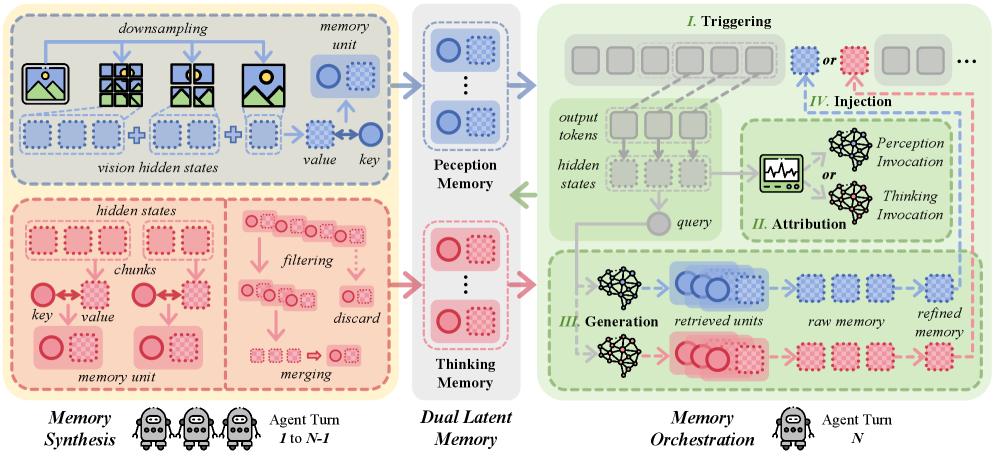

Why it matters왜 중요한가
In multi-agent vision, the message format is the bottleneck — text throws away what the model actually saw.
멀티에이전트 비전에서 병목은 메시지 형식이다 — 텍스트는 모델이 실제로 본 것을 버린다.
Text multi-agent systems get better as you add turns; visual ones do not. The authors show empirically that VMAS accuracy peaks at turn 3 and then drops below a single agent by turn 10, while total tokens surge over 30×. The culprit is text-centric communication: turning dense visual observations and latent cognitive states into discrete words is lossy, and it conflates "what I saw" with "what I concluded" in one stream, so errors and redundancy accumulate every hop. Worse, transmission is passive — an agent dumps everything to the next one whether it is needed or not. L²-VMAS reframes the problem as structured, on-demand latent memory access rather than free-text broadcasting.
텍스트 멀티에이전트는 턴을 늘릴수록 좋아지지만, 시각 시스템은 그렇지 않다. 저자들은 VMAS 정확도가 3턴에서 정점을 찍고 10턴에는 단일 에이전트보다 낮아지며 토큰은 30배 넘게 치솟음을 실험으로 보인다. 원인은 텍스트 중심 통신이다. 조밀한 시각 관측과 잠재적 인지 상태를 이산적 단어로 바꾸는 것은 손실적이며, 한 스트림 안에서 "내가 본 것"과 "내가 내린 결론"을 뒤섞어 매 단계 오류와 중복이 쌓인다. 게다가 전송은 수동적이라, 에이전트는 필요 여부와 무관하게 모든 것을 다음 에이전트에 넘긴다. L²-VMAS는 이를 자유 텍스트 방송이 아닌 구조화된 온디맨드 잠재 메모리 접근 문제로 재정의한다.

By the numbers핵심 숫자
(Qwen3-VL-8B-Thinking)최대 평균 정확도 향상
(Qwen3-VL-8B-Thinking)
vs. conventional VMAS최대 토큰 절감
(기존 VMAS 대비)
(Thinking) — no scaling wall10턴 vs 1턴 향상
(Thinking) — 벽 없음
mixed tasks (MMStar)이중 메모리,
혼합 과제(MMStar)
· sizes 2B–32BVLM 백본
· 2B~32B 규모
tested (linear→dynamic)검증한 멀티에이전트
구조(선형→동적)
Results — accuracy up, tokens down결과 — 정확도↑ 토큰↓
| Backbone | Δacc | Δtok |
|---|---|---|
| GLM-4.1V-9B-Thinking | +3.9 | −38.2 |
| InternVL-3.5-8B | +2.7 | −21.3 |
| LLaVA-OV-1.5-8B | +3.1 | −29.5 |
| Qwen3-VL-8B-Instruct | +3.4 | −24.6 |
| Qwen3-VL-8B-Thinking | +5.4 | −43.6 |
Δacc in % points; Δtok = total-token change (negative = fewer tokens). Backbone-level figures span the paper's reported 2.7–5.4% accuracy and 21.3–44.8% token-saving ranges; per-backbone values are representative excerpts.
Δacc는 %p, Δtok는 총 토큰 변화(음수=토큰 감소). 백본별 수치는 논문이 보고한 정확도 2.7~5.4%·토큰 절감 21.3~44.8% 범위에 해당하는 대표 발췌이다.
In one diagram한 장의 그림
Idea: decouple perception from thinking, and trigger by uncertainty아이디어: 지각과 사고를 분리하고, 불확실성으로 트리거
Dual latent memory
Two banks. Perception MP stores multi-granularity visual features from the VLM's own (frozen) encoder + projector. Thinking MT stores reasoning chunks split at high-entropy delimiter tokens. A small learnable compressor turns each value into a compact key, and MT is pruned by triggering-rate + semantic-similarity to stay bounded.
두 뱅크. 지각 MP는 VLM 자체(동결) 인코더+프로젝터에서 나온 다중 입도 시각 특징을 저장한다. 사고 MT는 고엔트로피 구분 토큰에서 분할한 추론 청크를 저장한다. 작은 학습형 압축기가 각 값을 간결한 키로 만들고, MT는 트리거율+의미 유사도로 가지치기해 용량을 제한한다.
Proactive on-demand access
Four stages. Trigger when windowed token entropy exceeds μ+λσ (a decision bifurcation). Attribute via a Gumbel-Sigmoid gate: perception or thinking? Retrieve top-k units and refine to a fixed-length latent. Inject it at the trigger point and resume decoding. The VLM stays frozen; only external memory modules are RL-trained (PPO).
네 단계. 윈도우 토큰 엔트로피가 μ+λσ를 넘으면(결정 분기점) 트리거. Gumbel-Sigmoid 게이트로 지각/사고 중 무엇을 볼지 귀속. top-k 단위를 검색해 고정 길이 잠재로 정제. 트리거 지점에 주입하고 디코딩을 재개. VLM은 동결이며, 외부 메모리 모듈만 RL(PPO)로 학습한다.
How it works어떻게 작동하나
- Build perception memory지각 메모리 구축Hierarchically downsample the image into multi-granularity patches, encode with the frozen vision encoder, align with the pre-trained projector, and store as MP key–value units (initialized once, expanded only on new visual content).이미지를 다중 입도 패치로 계층적 다운샘플하고, 동결 비전 인코더로 인코딩, 사전학습 프로젝터로 정렬해 MP 키–값 단위로 저장(1회 초기화, 새 시각 콘텐츠 등장 시에만 확장).
- Chunk thinking by entropy엔트로피로 사고 청킹Split the reasoning trace at high-entropy delimiter tokens (Bernoulli on clipped entropy) so each chunk is semantically independent, then compress into MT units and prune by triggering-rate + similarity on overflow.추론 흐름을 고엔트로피 구분 토큰(클립 엔트로피의 베르누이)에서 분할해 각 청크가 의미적으로 독립되게 하고, MT 단위로 압축, 초과 시 트리거율+유사도로 가지치기.
- Trigger + attribute on demand필요 시 트리거 + 귀속During the current agent's decoding, monitor windowed entropy; when it spikes, a learnable Gumbel-Sigmoid gate decides whether to consult perception or thinking memory.현재 에이전트 디코딩 중 윈도우 엔트로피를 감시하고, 급증 시 학습형 Gumbel-Sigmoid 게이트가 지각·사고 메모리 중 무엇을 참조할지 결정.
- Retrieve, refine, inject검색·정제·주입Use the window as a query, retrieve top-k units, refine them to a fixed-length latent, inject at the trigger position and continue — yielding higher accuracy with fewer tokens that keeps scaling to deeper turns.윈도우를 질의로 top-k 단위를 검색, 고정 길이 잠재로 정제해 트리거 지점에 주입 후 진행 — 더 적은 토큰으로 더 높은 정확도를 내고 깊은 턴까지 확장된다.
What to take away그래서, 가져갈 것
The "scaling wall" is real and named. VMAS accuracy peaking at turn 3 then dropping below a single agent (with 30× tokens) is a crisp, quantified failure mode worth citing on its own.
"스케일링 벽"은 실재하며 명명되었다. VMAS 정확도가 3턴에 정점 후 단일 에이전트 이하로 떨어지는(토큰 30배) 현상은 그 자체로 인용할 만한 정량적 실패 모드.
Decoupling perception vs thinking pays off. Each memory helps most on its matching task, and combining both gives +7.9% on mixed tasks — the split is not cosmetic.
지각과 사고의 분리가 효과적이다. 각 메모리는 대응 과제에서 가장 도움이 되고, 둘을 합치면 혼합 과제에서 +7.9% — 분리는 형식적인 것이 아니다.
Model-agnostic, frozen backbone. Only external memory modules are trained, so it bolts onto five different VLMs and sizes 2B–32B without touching the base model.
모델 무관, 동결 백본. 외부 메모리 모듈만 학습하므로 기반 모델을 건드리지 않고 5개 VLM과 2B~32B 규모에 부착된다.
Efficiency and accuracy together. Rare to cut 20–45% tokens and raise accuracy — usually you trade one for the other.
효율과 정확도를 동시에. 토큰을 20~45% 줄이면서 정확도까지 올리는 것은 드물다 — 보통은 둘을 맞바꾼다.